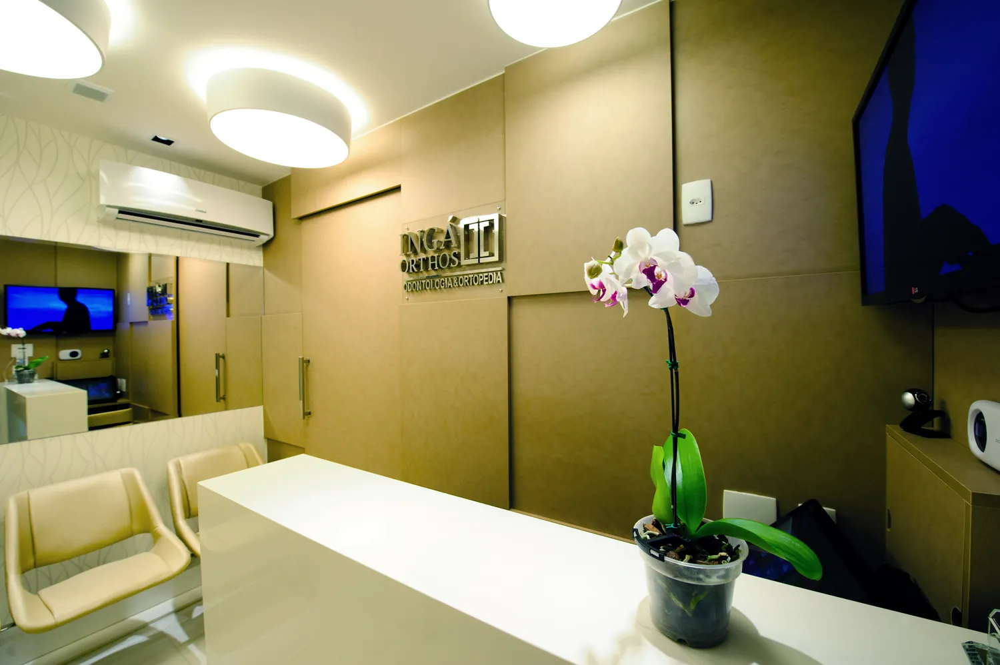
Ingá OrthosOdontologia
Ortodontia, Invisalign, implantes, canal, periodontia e mais. Uma equipe especializada, com tecnologia digital, atendendo crianças, adultos e idosos.
Ingá, Niterói
Odontologia especializada
Na Ingá Orthos, unimos experiência, tecnologia e um atendimento humanizado para transformar sorrisos em todas as fases da vida.
Do primeiro dentinho às dores crônicas, a Ingá Orthos reúne odontologia, odontopediatria e ortopedia sob o mesmo princípio: atendimento humano, tecnologia e resultado.

Ortodontia, Invisalign, implantes, canal, periodontia e mais. Uma equipe especializada, com tecnologia digital, atendendo crianças, adultos e idosos.
Ingá, Niterói
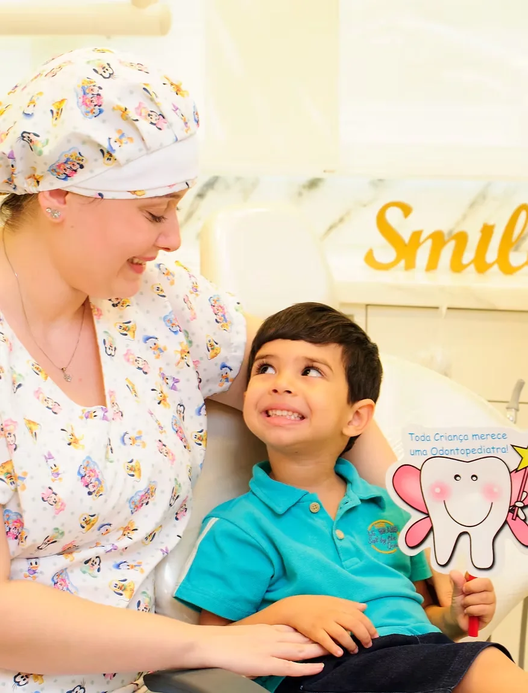
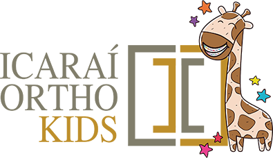
Clínica especializada em crianças, com atendimento individualizado e uma relação de confiança entre pais, filhos e dentistas.
Shopping Icaraí, Niterói
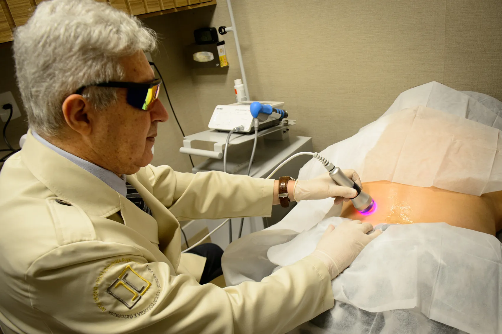
Tratamento não invasivo para dores crônicas, com ondas de choque e medicina regenerativa, realizado por médicos especializados.
Ingá, Niterói
Ingá Orthos Odontologia
Desde 2011 a clínica reúne diferentes especialidades no mesmo endereço. Seu tratamento é planejado por dentistas que conversam entre si, do diagnóstico à manutenção.
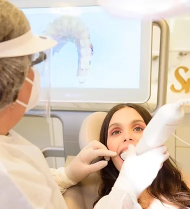
Correção da posição dos dentes e dos ossos maxilares, para melhorar a estética do sorriso e a função mastigatória.
Alinhador transparente. Tratamento rápido, estético e acessível, conduzido por Invisalign Doctors.
Saúde bucal de crianças, do nascimento à adolescência, com atendimento também na Icaraí Ortho Kids.
Tratamento da perda dentária com reabilitações protéticas apoiadas ou retidas por implantes.
Retirada da polpa do dente, o tecido que fica na parte interna da raiz, para tratar dor e infecção.
Diagnóstico, prevenção e tratamento das alterações nos tecidos que sustentam os dentes, como a gengiva.
Especialidade de caráter médico que trata cirurgicamente as doenças da cavidade bucal.
Reposição de dentes e planejamento integrado de casos complexos, devolvendo função e estética.
Atendimento adaptado e paciente, com experiência em pacientes atípicos e com TEA.
Procedimentos para o equilíbrio e a harmonia entre o rosto e o sorriso.
Nossa clínica
Ambientes modernos, equipamentos de última geração e um atendimento acolhedor para garantir sua segurança, seu conforto e os melhores resultados.
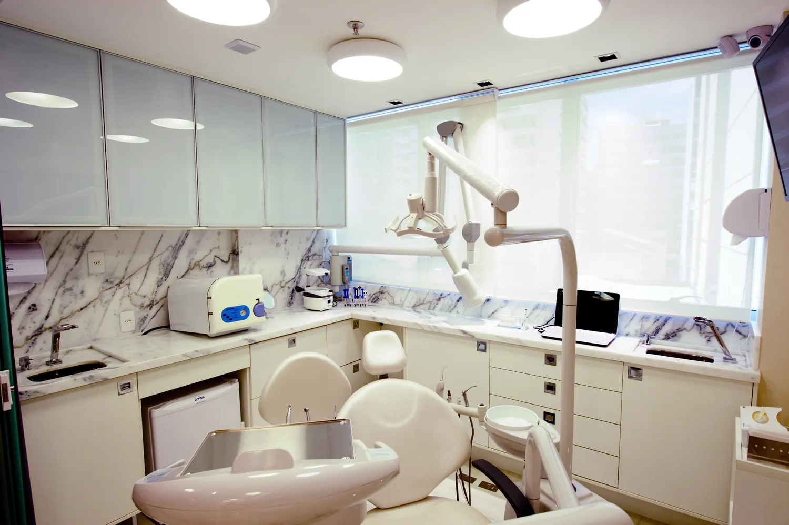
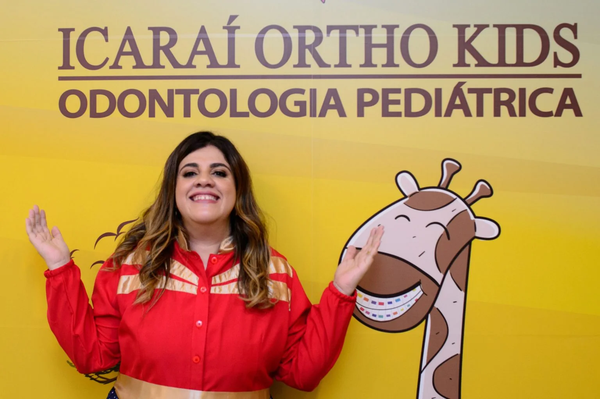
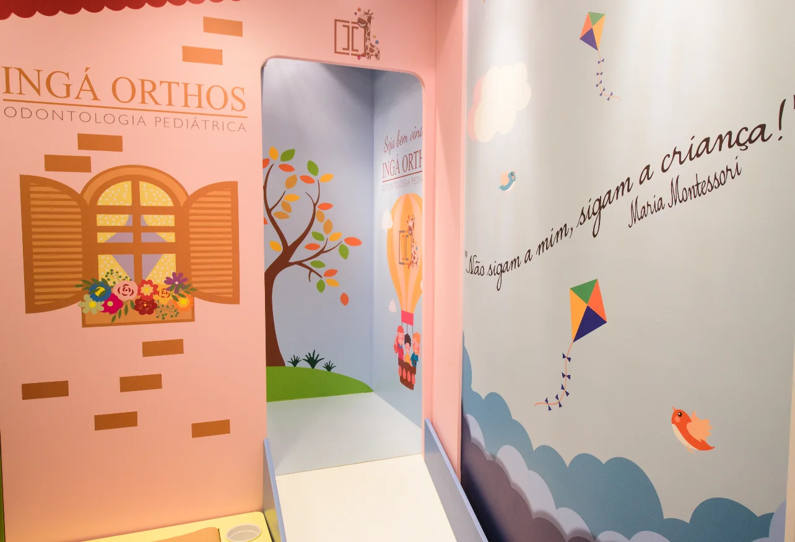
A Icaraí Ortho Kids é uma clínica especializada no tratamento de crianças. Cada consulta é feita com paciência, carinho e muita escuta, porque, mais do que dentes, cuidamos de experiências.
Acompanhamento desde os primeiros dentes, com orientação aos pais.
Avaliação do frênulo da língua para identificar dificuldades de mamada, fala e alimentação.
Acompanhamento do crescimento dos maxilares e do alinhamento dos dentes.
Tratamento endodôntico para crianças de até 12 anos.
Equipe Kids: Dra. Alana Labruna, Dra. Gabriela Folly, Dra. Ana Carolina Nascimento, Dra. Beatriz Rangel e Dra. Gabrielle Carrozzino.
Tratamento não invasivo para dores crônicas, realizado exclusivamente por médicos especializados.
As ondas de choque aceleram a recuperação e aliviam a dor em inflamações, estimulando o processo de reparação e cicatrização dos tendões, das junções miotendíneas e dos tecidos ósseos.
A resposta completa do corpo leva de 3 a 12 semanas, conforme o caso, o grau da patologia e a resposta biológica de cada paciente.
Segunda a sexta, das 9h às 18h. Aceitamos convênio Petrobras.
Profissionais que atuam há mais de dez anos na região leste fluminense, com formação contínua e um jeito próprio de receber: com escuta, paciência e carinho.
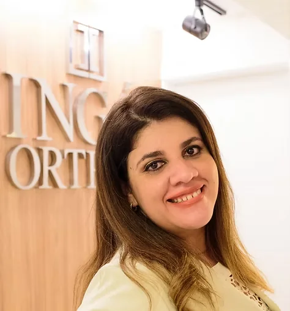
Fundadora e CEO. Invisalign Doctor e gestora em saúde.
CRO RJ 29719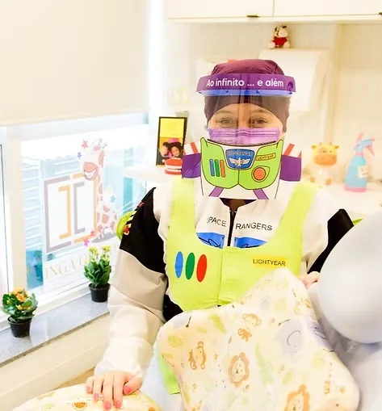
Ortodontista e odontopediatra, com experiência em pacientes atípicos e TEA.
CRO RJ 40608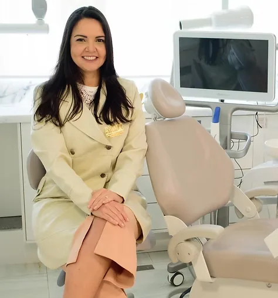
Especialista em endodontia e radiologia.
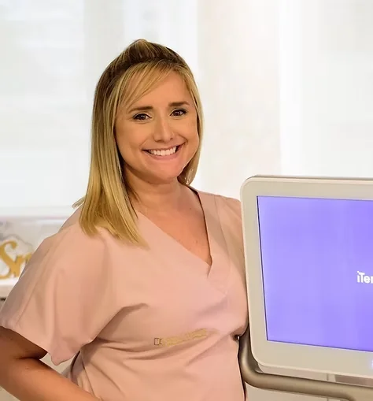
Clínica geral e especialista em ortodontia.
Na Terapia de Choque, o atendimento é feito por médicos especializados, como o Dr. Euclides. Na Ortho Kids, a equipe pediátrica está na seção da clínica infantil.
Excelente! Clínica moderna, com tecnologia de ponta e um atendimento primoroso. Todos os profissionais são excelentes e muito capacitados!
Excelente equipe, são prestativos, atendimento humanizado, tendo um cuidado admirável pelo paciente. O Dr. Euclides me explicou todo o meu problema e também o tratamento de forma clara, transmitindo total confiança.
Escolha a unidade, conte o que você precisa e continuamos a conversa pelo WhatsApp.
R. Dr. Nilo Peçanha, 133, salas 301 a 303
Ingá, Niterói - RJ, 24210-480
Rua Ator Paulo Gustavo, 229, loja 220
2º piso do Shopping Icaraí, Niterói - RJ
R. Dr. Nilo Peçanha, 133, sala 303
Ingá, Niterói - RJ, 24210-480
(21) 3587-5905 · (21) 2712-5206
Segunda a sexta, das 9h às 18h